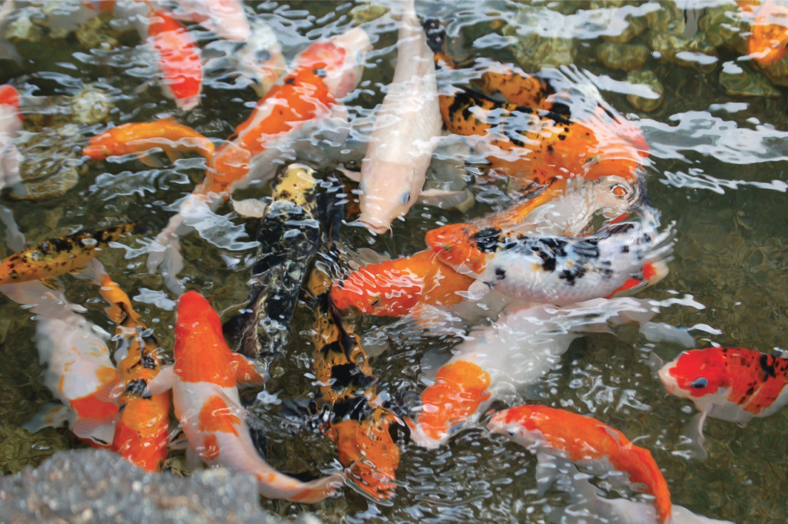

Selected Works
An important element that affects me, my presence and existence, and my daily life, are my surroundings. The more time we spend in a place, the more we subconsciously adapt to it. This collection is the result of my analysis of my subconscious adaptation.

The knitwear collection is inspired by bringing two very different worlds and aesthetics together. It is inspired by how we transform ourselves depending on the surroundings we are in and how we transform when exposed to and influenced by different places.Â
Some work that I created as an intern for the Development and Production team as well as the designers at The Cords and Co in Stockholm.